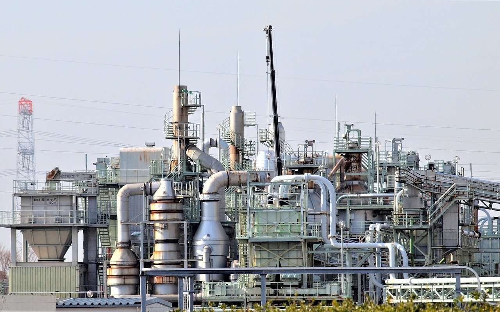

Linde Operations Monitor
Explore emissions, hydrogen and energy in one reporting workspace.

Inspect → Compare → Compile
What changes the trajectory?
Test a hydrogen electricity scenario. Adjust assumptions to see the arithmetic, not an AI prediction.
Hydrogen · sample EU-H2-01
Baseline uses the currently selected reporting period. Catalogue filters do not change this scenario’s source.
| Metric | Baseline | Scenario |
|---|
Electricity-associated emissions only; not a complete product footprint. The illustrative reference line is 10% below baseline, not a Linde target.
Ask the records.
A scripted assistant for this sample dataset. It cites the records behind each answer.
Local scripted replies. No AI service, messages or data transmission.
Your reporting basket.
Selected modules stay here as you explore. Review boundaries before exporting.
Synthetic sample data. No regulator-ready reporting, verified environmental claims or live integrations. Exports include metric boundaries and quality flags.
Less manual consolidation.
More context per reading.
Inspect
Open a module to trace the reading, unit, sample source and reporting boundary.
Compare
Explore a period, check missing readings and test explicit scenario assumptions.
Compile
Add relevant modules and download a clearly labelled sample report.
What is real, and what is sample?
Linde’s supplied public website describes gases, engineering, hydrogen, carbon capture and sustainability. All operation names, readings, regions, source IDs and trends in this demo are synthetic. No claim is made about Linde’s internal systems or buying intent. BOC Gases, Lagos is the supplied prospect context; its relationship to Linde has not been verified here.
Metric definitions and reporting boundaries
GHG records represent synthetic direct operational emissions in tonnes CO₂e. Intensity divides these emissions by the same module’s sample industrial-gas production in tonnes. Hydrogen output is tonnes H₂. Energy is MWh of electricity. Carbon capture is tonnes CO₂ captured at the process boundary: it is not avoided emissions or verified permanent storage. Logistics records represent litres of diesel, not a calculated GHG footprint. Incompatible units are never summed together.
How the scenario is calculated
Baseline electricity demand = hydrogen output × 52 MWh per tonne H₂. Scenario demand = baseline output × (1 + output change) × 52 × (1 − intensity improvement). Associated emissions = electricity demand × the chosen tCO₂e/MWh factor. The baseline factor is 0.23. No trained AI, weather model, additional emissions sources or operational constraints are included.
Local changes and integration boundaries
Edited readings and report selections stay in memory for this page session and reset on reload. Nothing is sent. Production use would require authorised system access, data validation, security controls and agreed reporting methodology. This concept does not establish measured time or cost savings.
Brand assets and photography
A text identity is used in place of the official logo because reuse permission has not been established. All displayed photographs are illustrative Pixabay stock, not Linde facilities, equipment or staff. Source credits appear below. This independent concept is not endorsed by Linde or BOC Gases.